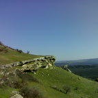
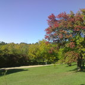

<div id="divLeft">

  <h1>Велосипед самый распространенный и доступный вид отдыха.</h1>

  <div class="divGreen">
      Во всем мире можно наблюдать так называемый «велосипедный бум», потому как у людей в корне изменилось отношение к отдыху 
      и представление о нем. Сейчас большинство предпочитает отдыхать на природе и заниматься спортом не в спортивных залах, 
      а на свежем воздухе.<br/>
      Велотуры и велопоходы – это не экстрим и не спорт. Каждый желающий может принять участие, а мы позаботимся, чтобы у Вас остались 
      максимум ярких воспоминаний.
  </div> <br/>
    
  <div style="margin-top: 0pt;" class="divTourImageL">
      
  </div>

  <div style="margin-top: 0pt;" class="divTour">
      <h1>
        <a title="Велотуры по Крыму" href="tours.html" class="underline">НЕДОРОГОЙ ВЕЛОТУР ПО КРЫМУ</a>
      </h1>

      <ul>
        <li>местность: <span class="spnRed">окрестности Бахчисарая</span></li>
        <li>тип: <span class="spnRed">однодневный тур</span></li>
      </ul>

      <p>
        Пусть Вас не беспокоят прохладные ночи, все ночлеги проходят в тепле. Все поездки однодневные. 
        Вы сами выбираете заинтересовавшие Вас направления и продолжительность поездки.
        Сделайте велосипед частью своей жизни, и он в долгу не останется.
      </p>

      <p>
    <a href="tours.html" class="aMore underline">подробнее</a>
      </p>
  </div>

  <div class="divTourImageR">
      
  </div>

  <div class="divTour">
    <h1>
      <a title="Характеристика тура" href="tours.html" class="underline">ХАРАКТЕРИСТИКА ТУРА</a>
    </h1>

    <ul>
      <li>местность: <span class="spnRed">окрестности Бахчисарая</span></li>
      <li>тип: <span class="spnRed">однодневный тур</span></li>
    </ul>

    <p>               
        Однодневные путешествия по выбранному Вами маршруту. Участникам необходимо иметь навыки езды на велосипеде. 
        Особая форма горных массивов Внутренней и Внешней гряд Крымских гор, которые с юга представляют собой очень крутые склоны 
        с вертикальными обрывами, а с севера очень долгие и пологие спуски, позволяет ездить на велосипеде вообще без дорог. 
        Часть пути проходит по асфальту, часть по грунтовым дорогам. В некоторых местах велосипед приходится вести в руках. 
        Каждый день Вы путешествуете налегке. 
    </p>

    <p>
      <a href="tours.html" class="aMore underline">подробнее</a>
    </p>
  </div>

</div>

{% include sidebar.html %}